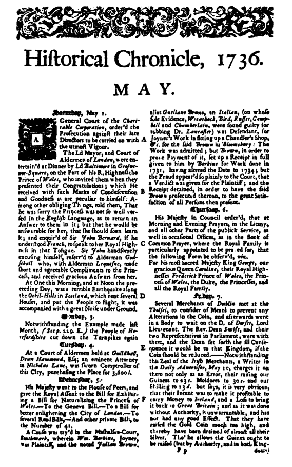
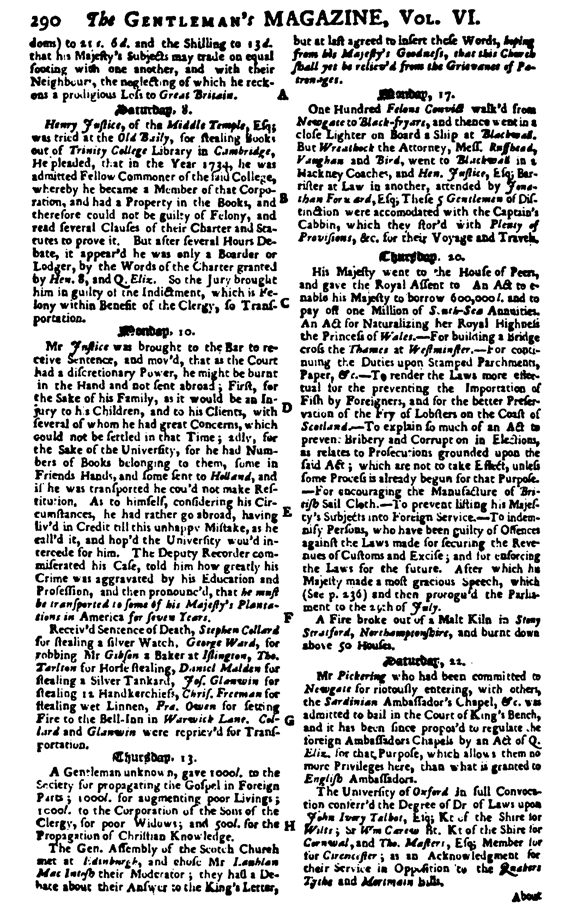

Dorcas Hellyer’in Sorgulaması ve İfadesi
Yukarıda adı geçen kişi, Büyük Britanya’nın ve İngiltere’nin Tanrı Kral’ının lütfuyla tahtında oturan hükümdarımız II. George’un saltanatının onuncu yılının
bu Otuz Bir Temmuz günü, sözlerinin doğruluğu üzerine ant içmiştir.